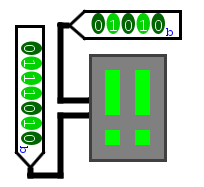

Matrice de LED
Matrice de LED
| Librairie : | Entrée/Sortie |
| Introduction : | 2.2.0 |
| Apparence : |
 
|
Comportement
Affiche une petite grille de pixels dont les valeurs sont déterminées par l'état des entrées. La grille peut comporter jusqu'à 32 lignes et 32 colonnes.
Broches
L'interface du composant varie en fonction de la valeur de l'attribut Input Format. Trois valeurs sont possibles.
- Colonnes
-
Les entrées sont alignées le long du bord sud du composant, avec une entrée multibits pour chaque colonne de la matrice. Chaque entrée comporte autant de bits qu'il y a de lignes dans la matrice, le bit de poids faible correspondant au pixel le plus au sud de la colonne. Un 1 indique qu'il faut allumer le pixel correspondant, tandis qu'un 0 indique qu'il faut le laisser dans l'ombre. Si l'un des bits d'une colonne est une valeur flottante (U) ou une valeur d'erreur (E), les pixels correspondants seront rouges.
- Lignes
-
Les entrées sont alignées le long du bord ouest du composant, avec une entrée multibits pour chaque rangée de la matrice. Chaque entrée comporte autant de bits qu'il y a de colonnes dans la matrice, le bit de poids faible correspondant au pixel le plus à droite de la ligne. Comme pour le format Colonnes, un 1 indique qu'il faut allumer le pixel correspondant, et un 0 indique qu'il faut laisser le pixel dans l'ombre. Si l'un des bits d'une colonne est une valeur flottante (U) ou une valeur d'erreur (E), les pixels correspondants seront rouges.
- Sélection Lignes/Colonnes
-
Il y a deux entrées sur le bord ouest du composant. L'entrée multibits supérieure comporte autant de bits qu'il y a de colonnes dans la matrice, le bit de poids faible correspondant à la colonne la plus à droite. L'entrée multibits inférieure comporte autant de bits qu'il y a de lignes dans la matrice, le bit de poids faible correspondant à la ligne inférieure. Si l'un des bits de l'une des entrées est une valeur flottante (U) ou une valeur d'erreur (E), les pixels correspondants seront rouges.
Normalement, un pixel situé à un emplacement particulier est allumé si le bit de la colonne correspondante dans l'entrée supérieure est à 1 et si le bit de la ligne correspondante dans l'entrée inférieure est à 1.
Par exemple, pour une matrice 5x7, si la première entrée est 01010 et la seconde 0111010, les deuxième et quatrième colonnes sont allumées pour les deuxième, troisième, quatrième et sixième lignes ; le résultat semble être une paire de points d'exclamation. (Ce format d'entrée peut sembler peu intuitif, mais des matrices de LED sont vendues dans le commerce avec exactement cette interface. par exemple Lite-On vend de tels composants). 
Attributs
- Format de l'entrée
- Sélectionne la manière dont les broches correspondent aux pixels, comme indiqué ci-dessus.
- Colonnes
- Sélectionne le nombre de colonnes de la matrice, qui peut aller de 1 à 32.
- Lignes
- Sélectionne le nombre de lignes de la matrice, qui peut aller de 1 à 32.
- Sélectionner l'emplacement
- Déterminer de quel côté se trouvent les bus, en haut ou en bas, à gauche ou à droite.
- Couleur allumée
- Couleur à afficher lorsque le pixel est allumé.
- Couleur éteinte
- Couleur à afficher lorsque le pixel est éteint.
- Persistance lumineuse
- Si cette valeur est supérieure à 1, la LED restera colorée pendant la durée des clics indiqués. Nécessite une horloge dans le circuit.
- Forme d'un pixel
- L'option carrée signifie que chaque pixel est dessiné comme un carré de 10x10, remplissant le composant sans espace entre les pixels. L'option cercle signifie que chaque pixel est dessiné comme un cercle de diamètre 8, avec des espaces entre chaque cercle. L'option cercle est plus difficile à interpréter, mais elle se rapproche davantage des composants matriciels à DEL disponibles sur le marché.
- Étiquette
- Le texte de l'étiquette associée au composant.
- Emplacement de l'étiquette
- L'emplacement de l'étiquette par rapport au composant.
- Police de l'étiquette
- La police de caractères avec laquelle l'étiquette doit être affichée.
- Étiquette Visible
- Détermine si l'étiquette est visible ou non.
Comportement de l'outil pousser
Aucun.
Comportement de l'outil text
Aucun.
Retour à Référence de la bibliothèque